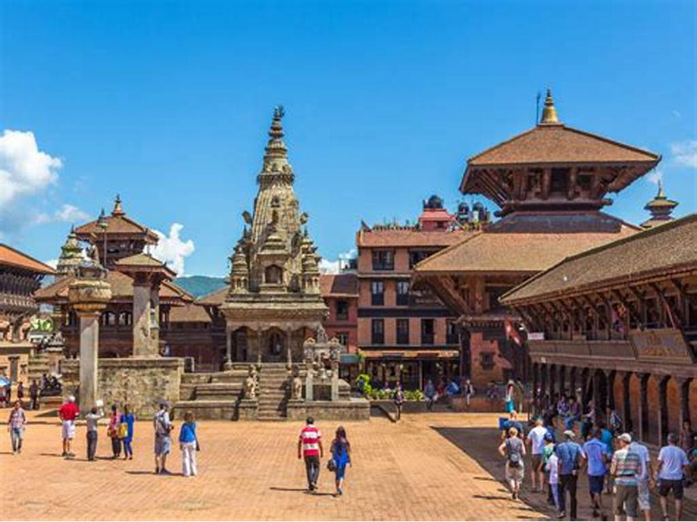
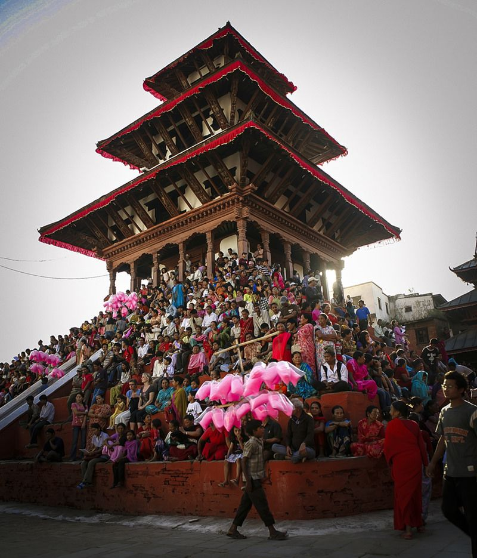
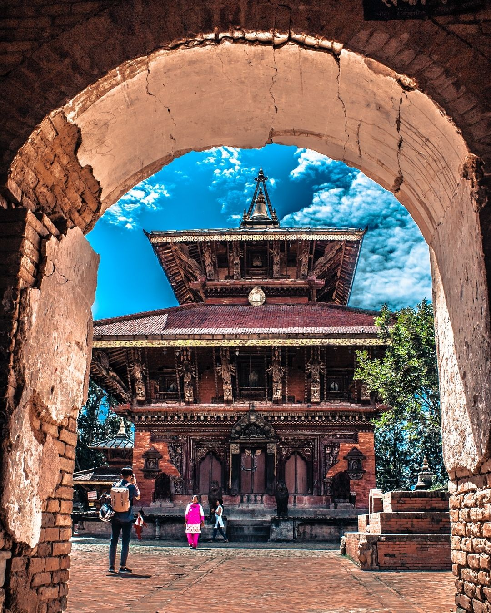
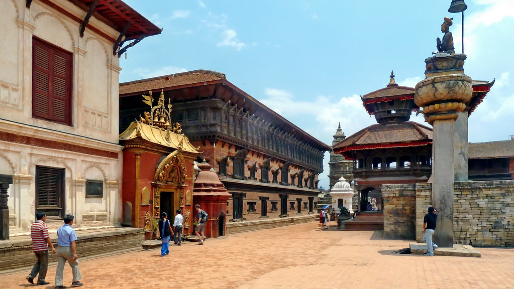
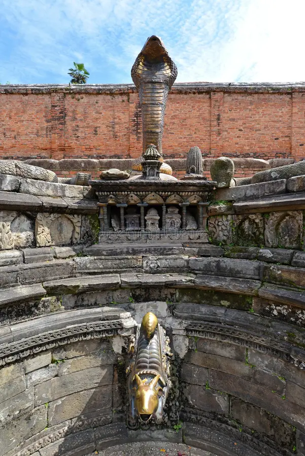
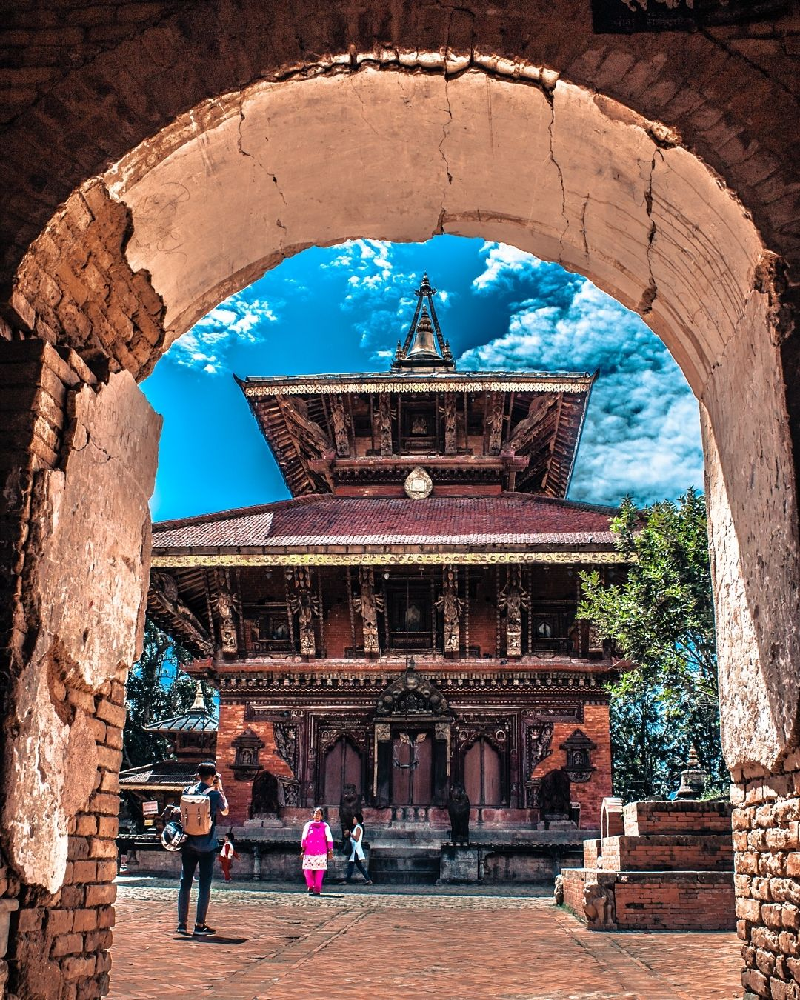
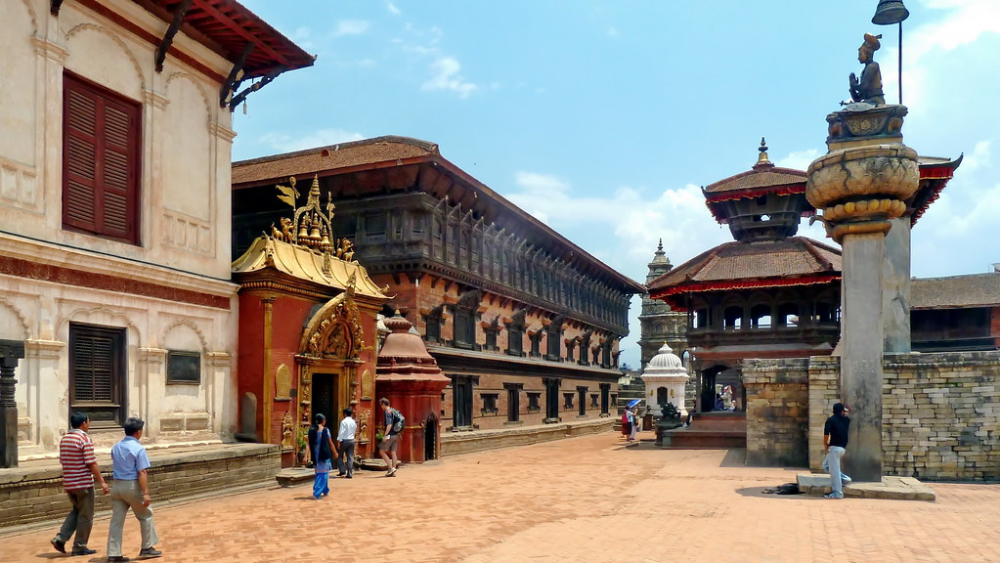
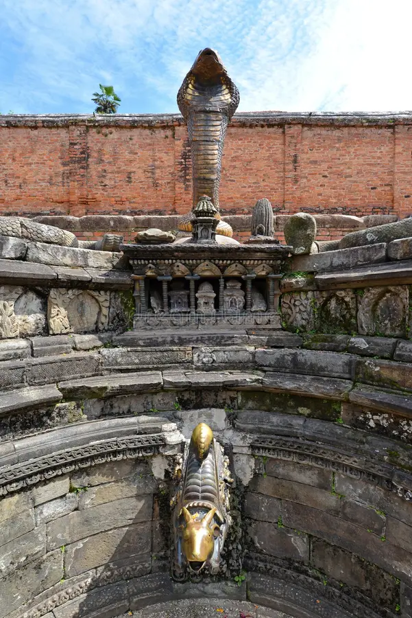

Bhaktapur Durbar Square

Bhaktapur, also known as Bhadgaon, is a captivating heritage site located in the Kathmandu Valley.
for its well-preserved medieval architecture, Bhaktapur Durbar Square is a UNESCO
Renowned
World Heritage Site and
offers a glimpse into the rich cultural and artistic heritage of Nepal.
The heart of Bhaktapur is the Durbar Square, a grand plaza that served as the royal palace of the ancient
Malla kings. The square is surrounded by stunning palaces, temples, courtyards, and intricate stone-carved
structures that reflect the architectural brilliance of the Newari community.
The 55-Window Palace, one of the main attractions in Bhaktapur Durbar Square, showcases exquisite
craftsmanship. Its elaborately carved wooden windows, doors, and balconies are a testament to the Newari
artisans' skill and attention to detail.
Another highlight of Bhaktapur is the Nyatapola Temple, a five-story pagoda temple dedicated to the goddess
Siddhi Lakshmi. The temple's towering structure and intricately carved wooden struts make it a masterpiece
of Newari architecture.
The town's rich cultural heritage is further celebrated through various festivals and rituals. Festivals
like Bisket Jatra, the Nepali New Year, and the Indra Jatra are celebrated with great pomp and enthusiasm,
with processions, music, dance performances, and traditional rituals that showcase the town's vibrant
cultural traditions.
 





Bhaktapur's status as a living museum attracts visitors from around the world. Its well-preserved heritage
sites, the fusion of Hindu and Buddhist religious practices, and the warm embrace of the Newari culture make
it an unforgettable destination for those seeking to immerse themselves in the history and traditions of
Nepal.
In conclusion, Bhaktapur is a captivating destination that offers a glimpse into Nepal's rich cultural and
artistic heritage. From its well-preserved medieval architecture to its vibrant markets and traditional crafts,
the town presents a harmonious blend of history, traditions, and craftsmanship. Whether you're exploring the
intricately carved structures of Durbar Square, participating in workshops to learn traditional arts, or simply
soaking in the serene atmosphere, Bhaktapur promises an unforgettable experience for those who appreciate
history, culture, and the beauty of Nepal.